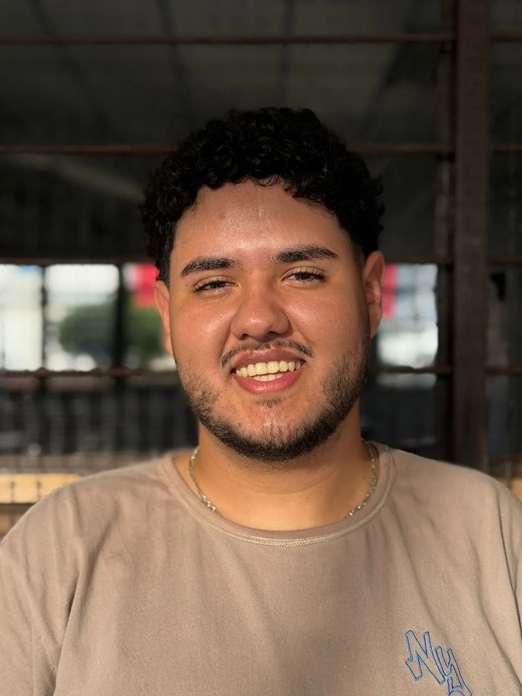

Misión y visión
flagMisión
Facilitar el acceso a los servicios de instituciones públicas y privadas mediante una plataforma web de turnos virtuales que elimine las filas físicas, reduzca los tiempos de espera y dé información clara y en tiempo real a las personas.
visibilityVisión
Ser en los próximos años una solución de referencia en la región para la gestión de turnos, adoptada por universidades, clínicas y oficinas de atención, que mejore la experiencia de atención y apoye la toma de decisiones con datos.
Nuestro equipo

Líder de proyecto
Coordina las tareas del grupo, define prioridades y presenta los avances al docente.
Desarrollo Frontend
Diseña e implementa las interfaces del usuario con HTML, CSS y JavaScript.
Desarrollo Backend
Construye la lógica de turnos, la base de datos y la comunicación en tiempo real.